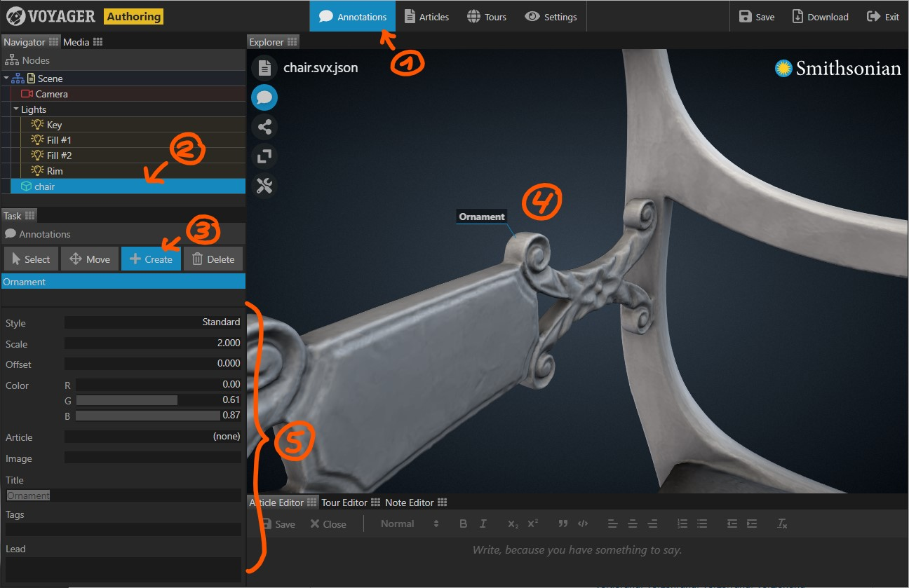

Use the Annotations Task to annotate a model in 3D space.
- Select the Annotations Task in the task bar.
- Select the model you want to annotate.
- In the task panel, select the Create button.
- Click on the model to place an annotation.
- Adjust the properties of the new annotation such as appearance and content.
- Created annotations appear in a list in the task panel. Click an annotation to display its properties. If you don’t see the list, make sure the right model is selected.
- To reposition an annotation, select it from the list, then select the Move button and click the new position on the model.
- To delete an annotation, select it from the list, then click the Delete button.
- You can also select an annotation directly by clicking it in the Explorer panel.

Annotation Properties
| Property | Description |
|---|---|
| Title | The title text of the annotation. |
| Lead | The lead text of the annotation. Not all annotation styles are able to display the lead text. |
| Tags | The tags associated with the annotation. Tags must be separated by comma. If one or multiple tags are provided, the annotation is only visible if the user selects at least one of the tags in the tag cloud. |
| Style | The basic style of the annotation. Currently only Standard and Extended should be used. The Extended annotation opens when clicked and reveals its lead text. |
| Scale | Changes the size of the annotation. The effect depends on the annotation style. |
| Offset | Changes the position of the annotation. The effect depends on the annotation style. |
| Color | Sets the color of the annotation. The effect depends on the annotation style. |
| Article | Select an article to be displayed with the annotation. If an article is selected, the annotation will show a read more link. Clicking the link opens the article. |
| Image | Displays an image with the annotation (not yet available). |